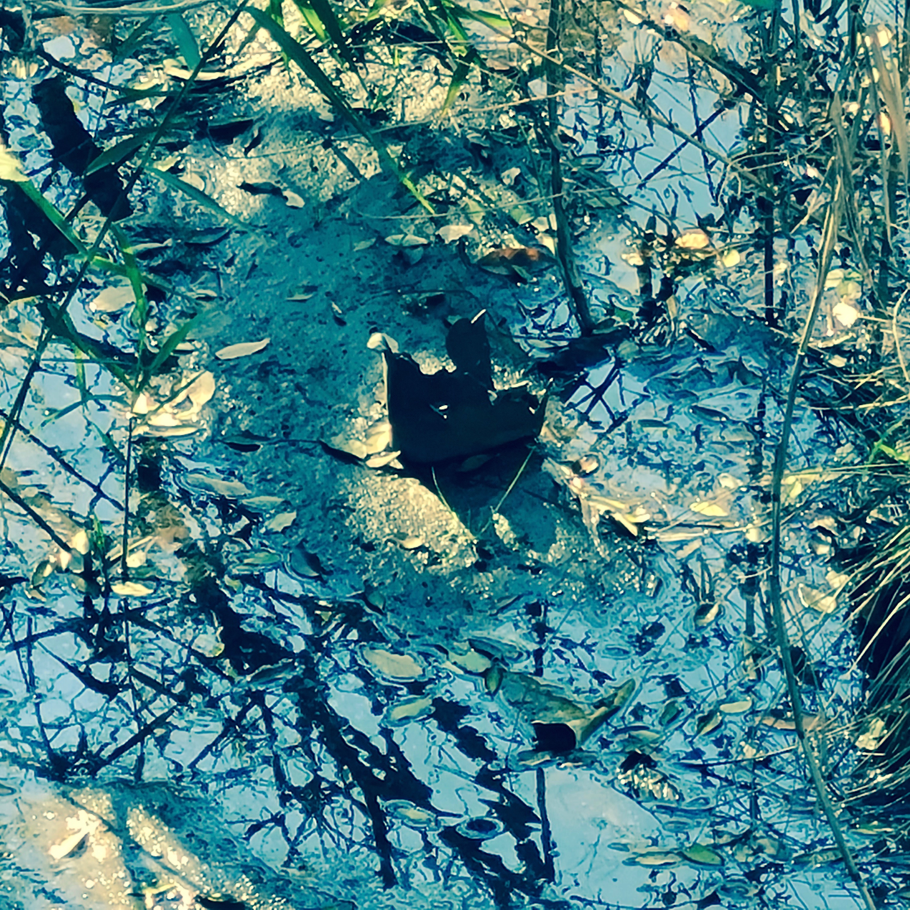

Profile
Nobuhiko HAYASHI
Artist of auditory media. Born in Aichi, Japan in 1992. He lives in Mie. After dropping out of Tama Art University's night school (discontinued), he learned himself computer music. After that, he obtained a master's degree in Media Creation from the Institute of Advanced Media Arts and Sciences [IAMAS].
林暢彦（はやし のぶひこ）
聴覚メディアのアーティスト。1992年愛知県生まれ。三重県在住。多摩美術大学の映像演劇学科（廃止）を中退後、コンピュータ音楽を独学。情報科学芸術大学院大学［IAMAS］修士（メディア表現）。
^
To top